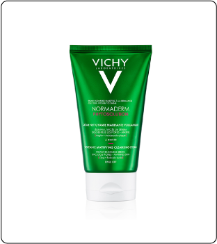

NOVEDADES
Enterate más sobre este evento que desembarca en tu ciudad. Conocé a los invitados que participan de esta edición:
HOST: María José Caudana
Es una reconocida periodista cordobesa, especializada en artes y espectáculos. Columnista de Telefe Noticias y ex directora de Revista Ocio, ama disfrutar tiempo con su familia, viajar y degustar exquisita gastronomía.
Aunque el trabajo y el cuidado de sus dos niños (Gaspar de 7 y Tomas de 1) le llevan gran parte del día, trata de hacerse siempre un tiempo para cuidar su piel: “Como siempre tengo que estar maquillada para salir al aire, la limpieza, la protección y la hidratación resultan fundamentales en mi día a día.
Y cuando me acuesto, si aún me queda algún resto de energía,
trato de sumar una buena crema nutritiva”.
DR. Mauricio Lugano Goñi
M.N 35743 | M.P 18922.
Médico especialista en Dermatología
Médico especialista en Clínica Estética y Reparadora
Graduado en la UNC,Facultad de Ciencias Médicas
Amante de la natación y deportes al aire libre
Apasionado de mi profesión y del cuidado de la piel de mis
pacientes.
“La constancia es la clave en el resultado de un tratamiento”
Instagram: dr.mauricioluganogoni
Te acercamos este contenido exclusivo, con toda la información que necesitás saber
para el cuidado de tu piel, teniendo en cuenta las características de la región en la que estás.
¿Vivís en una ciudad transitada? Conocé el efecto de la contaminación en tu piel.
Numerosos estudios demostraron que la contaminación puede contribuir al envejecimiento prematuro de la piel. Los signos visibles que evidencian la sobreexposición a la contaminación son:
- Disminución de la hidratación,
- Aumento de la producción de sebo,
- Manchas en la piel,
- Signos de la edad,
- En algunos casos, cáncer de piel.
Además tiene un “doble efecto” cuando se combina con otros efectos como los Rayos UV o el humo del cigarrillo. Por lo tanto, nuestro estilo de vida influye significativamente en cómo la contaminación afecta nuestra piel.
¿Cómo ayudar a combatir los signos de contaminación?
Tratándose de daños vinculados con la radiación UV o la contaminación, adoptar una rutina de cuidados y una dieta especial como parte de un enfoque global ayuda a mejorar la apariencia de los síntomas.
ALGUNOS TIPS INFALIBLES PARA PROTEGER TU PIEL DE LA CONTAMINACIÓN:
1.RUTINA DE LIMPIEZA
Es importante prestar atención a su rutina de limpieza para eliminar completamente la suciedad y las impurezas causadas por una acumulación de contaminación, ya sea que use o no maquillaje diariamente. La línea Pureté Thermale de Vichy tiene una serie de limpiadores faciales que eliminan las impurezas y protegen la piel de la contaminación.

2.EXFOLIACIÓN DOS VECES POR SEMANA
La exfoliación también puede ayudar a mejorar la aparición
de puntos negros y manchas oscuras, así como a eliminar
las células muertas de la piel,
lo que puede dar a la piel un aspecto cansado o aburrido.
El Limpiador Profundo en Arcilla Normaderm de Vichy elimina la grasa y limpia profundamente la piel.
3.INCORPORAR VITAMINA C
Demostrado científicamente, la vitamina C ayuda a reducir las manchas marrones que se producen por la exposición a la contaminación, por lo que si la textura de su piel o el tono desigual es una de tus principales preocupaciones, podés optar por un exfoliante enriquecido con vitamina C para una piel más brillante y más suave. Las ampollas Liftactiv Specialist Peptide C de Vichy aportan luminosidad, firmeza, y rellenan arrugas gracias a su 10% de Vitamina.
4.PROTECCIÓN SOLAR
La protección contra los rayos UV es algo que nunca debemos dejar a un lado, tal como la limpieza. El factor de protección debe ser +50 para asegurarnos de protegernos bien y evitar la aparición de manchas o problemas más graves a futuro. Es importante aplicar protector en el rostro, evitando la zona de los ojos, pero también en la boca, con labiales que tengan este componente, y en el cuello para que no sufra las consecuencias de la falta de cuidado. El nuevo Capital Soleil UV Age de Vichy es un protector solar de uso diario que además corrige y previene las imperfecciones en el rostro causadas por la radiación solar y el exposoma.